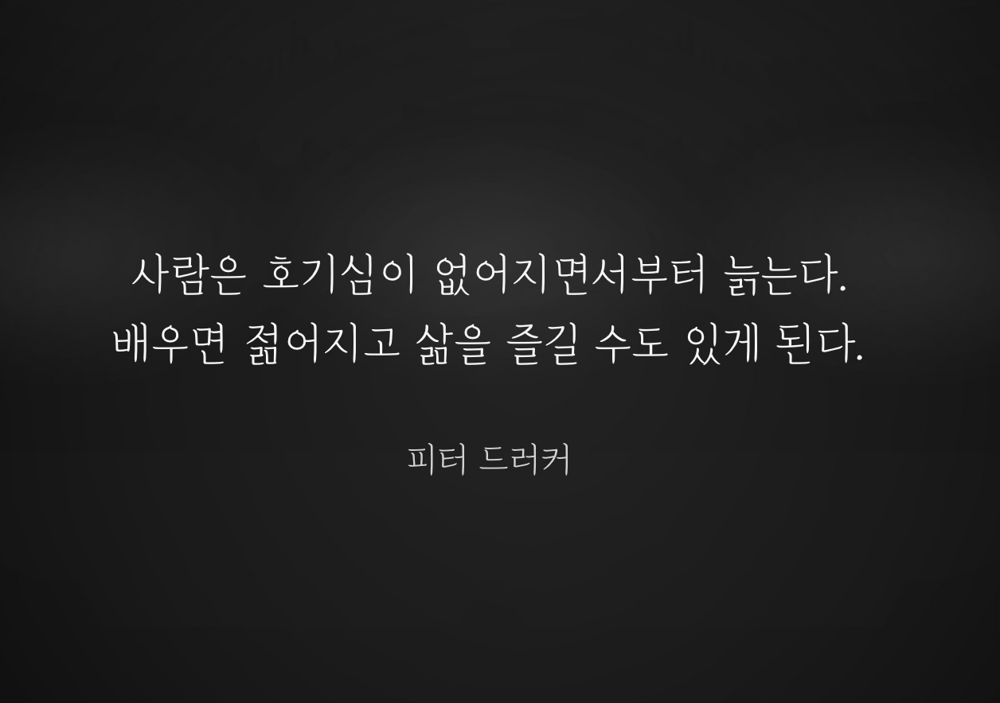
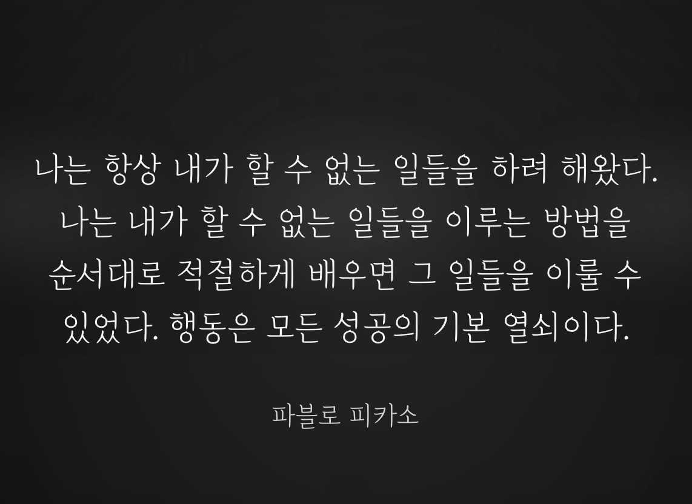

Linguistic Understanding Beyond Knowledge, Ability, and Process: A Multi-Layered and Multi-Axial Model
인공지능 시대에 언어적 이해의 조건을 다층적, 다축적 모델로 제시한 작업입니다.
논문 보기
저의 전문 분야는 분석철학입니다. 전북대학교 철학과에서 학사, 석사, 박사과정을 모두 마치고, 현재 전북대학교와 군산대학교에서 비판적 사고, 언어철학, 인식론 등을 가르치고 있습니다. 이곳에는 연구, 글쓰기, 사진 작업을 통해 제가 오래 붙들고 있는 질문과 시선을 담았습니다.
언어적 이해, 인식론, 비판적 사고 교육과 관련된 대표 논문과 진행 중인 작업입니다.
비판적 사고, 판단, 편견, 소문과 같은 주제를 더 편하게 읽을 수 있는 글의 형식으로 풀어내고 있습니다.

